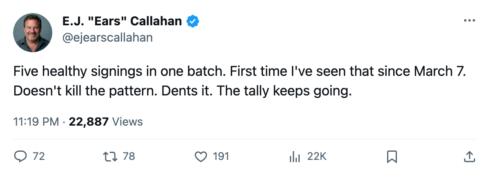
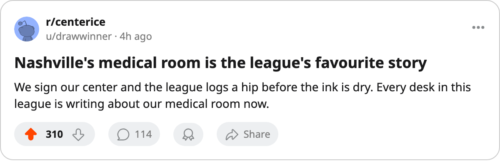

RUMOR METER: 8 Signings Filed Since March 25. 5 Stayed Clean. The Pattern Loses Its Edge. 🔥🔥
Through March 25 the desk tracked 12 injuries from 15 deals. This batch went 3 for 8. LA, CBJ and NSH each caught a body part.
 E.J. "Ears" CallahanInsider · The Hot Stove
E.J. "Ears" CallahanInsider · The Hot Stove

The signing-injury hit rate drops after 5 healthy deals in one batch

The desk called the signing-injury pattern on March 7. Through March 25 the league had filed 15 signings since the count began and 12 of those men landed on the injured list. That was an 80% hit rate, the best the desk had logged. The league filed 8 more deals in the 3 days since the last edition. 5 of them are healthy.
 Ian Laperriere75 signed with
Ian Laperriere75 signed with  Los Angeles Kings on April 2 for $133,370. The league logged a knee between April 4 and April 7. He returns May 18. Tyler Wright76 signed with
Los Angeles Kings on April 2 for $133,370. The league logged a knee between April 4 and April 7. He returns May 18. Tyler Wright76 signed with  Columbus Blue Jackets on April 4. A hip, logged in the same window, out until May 17.
Columbus Blue Jackets on April 4. A hip, logged in the same window, out until May 17.  David Legwand88 signed with
David Legwand88 signed with  Nashville Predators on April 4 for $647,060. A hip, same window, back April 12.
Nashville Predators on April 4 for $647,060. A hip, same window, back April 12.
Los Angeles Kings signed 2 men in this window and caught 1. Columbus Blue Jackets signed 3 and caught 1. Nashville Predators signed 1 and caught him.
Five clean deals in one batch
 Colorado Avalanche signed Andrei Nikolishin for $429,510.
Colorado Avalanche signed Andrei Nikolishin for $429,510.  Pittsburgh Penguins signed Josef Melichar for $255,890. Neither man is on the injured list. Columbus Blue Jackets brought in Henrik Tallinder and Adam Mair alongside Wright, and neither stayed hurt. Los Angeles Kings signed Derek Armstrong the same day as Laperriere. Armstrong stayed clean.
Pittsburgh Penguins signed Josef Melichar for $255,890. Neither man is on the injured list. Columbus Blue Jackets brought in Henrik Tallinder and Adam Mair alongside Wright, and neither stayed hurt. Los Angeles Kings signed Derek Armstrong the same day as Laperriere. Armstrong stayed clean.
This is the first batch the desk has tracked where the majority of new signings stayed healthy. 3 injuries from 8 deals is not a coincidence a general manager would accept. But the consecutive streak this desk counted in early March broke weeks ago, and the run that built this column's reputation is over.
The desk reports what the league files. The league files signings. The league files injuries. The overlap has been too tight, too often, for the desk to look away.
What feeds the count next
The regular season is done. The draft sits 62 days away. Free agency doesn't close for another 112 days. Teams signing in this window are taking depth contracts, cheap fourth-line bodies, emergency deals to fill a crowded medical room. The desk has no read on who goes next, and the pattern doesn't need one. The league just needs to keep filing.

